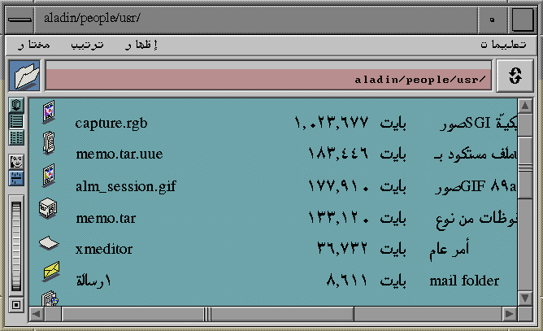

We provide language and cultural support for Middle Eastern, North African, and Egyptian versions of Arabic. WorldView(TM) Arabic, developed by LangBox International, is composed of two main subpackages: ALM.TTY and ALM.GUI.

To customize your system to recognize conventions such as left-to-right and right-to-left writing directions, context analysis, dual keyboard mapping, numeral shaping, date and time formats, currency format, and sorting order, as well as to display information and accept input in Arabic, please follow the steps below:
Once you have performed these steps, WorldView(TM) Arabic will display information and accept input in Arabic whenever you log on to your system.
To print an Arabic text file to a PostScript compatible printer, use the following command:
% ilptops textfile | lp
where textfile is the name of your file. The ilptops program converts Arabic text to PostScript format. You can print directly from ieditor or Showcase if your printer supports Arabic characters. If a printer that supports Arabic characters is not available, you may save the document as a text file in ieditor or showcase before printing it with the ilptops command.
System-wide default resource files are located in:
Default scheme files are located in /usr/lib/X11/ar_AR./schemes{get correct path}.
If you want to modify your resource definitions, we recommend that you modify the $HOME/.Xdefaults file.
A WorldView(TM) Arabic Development Package is also available for application developers who want to address Arabic language market needs in greater detail. For further information, please contact:
LangBox International (A Gulf Computers, Inc. Subsidary) Immeuble Space, Bat. B 208/212, Route de Grenoble 06200 Nice, France Tel: (33) 93 71 14 10 Fax: (33) 93 71 15 60 E-Mail: langbox@spartacus.com
or
SGI European & Middle East Distribution Territory Grand Atrium, Chemin des Avouillons 30 1196 Gland, Switzerland Tel.: (41) 22 9999600 Fax.: (41) 22 9999601